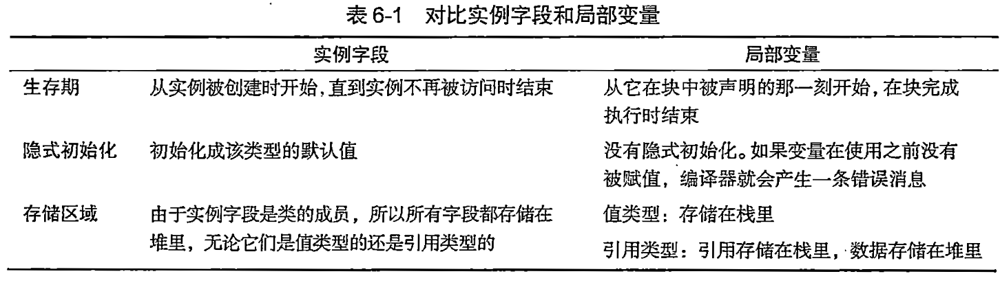

开场¶
🎙️ “大家好！欢迎观看《C#初学者实例教程》的第6.4.3课《方法》。
一个完整的类，不仅要有数据，还要有操作数据的行为，这就是今天要讲的方法。
本期视频的知识点：
- 方法是什么
- 方法的基础语法
- 方法的参数
- 方法的返回值
- 方法的高级特性
- 实践中的原则
一、方法是什么¶
方法的由来¶
案例：求一个整数的平方
没有“方法”的概念，代码可能是这样的流水账。这段代码存在三个问题：
- 代码逻辑重复: 重复写相同的指令“输入一个数→计算平方→输出”。
- 维护困难，如果要修改求平方的逻辑或修改输出格式，需要修改多处。
- 可读性差：代码意图被重复的细节淹没。
代码的方法改造¶
第一步：方法体
使用花括号把重复的代码包裹起来，形成一个代码块，称之为“方法体”。我们希望方法体可以重复调用。
第二步：方法名
为了调用方法体，需要为“方法体”起个名字，我们起名叫Square。这个名字就叫“方法名"。
第三步：参数
删掉变量a的初始化值5。我们不需要初始化，我们需要每次向方法体内传入不同的值。可以这样做：在方法名Square后面再添加一组小括号,然后把int a移动到小括号内，记得去掉分号。小括号里定义的变量叫参数，用于接收外部传入的值。
第四步：返回值
所有的方法必须设置返回值，在这里，返回值就是result。所以我们在代码底部，添加一行代码：return result;;同时必须在方法名的前面指定返回值的类型是int。 最后可以把Console.WriteLine(result)删掉。
第五步：static
这是代码会报错：因为Main是一个静态方法，在静态方法内只能调用静态方法，所以修改代码：第六步：调用方法
在方法名Square()后面紧跟着写一组小括号，小括号在这里表示”执行“。当调用“方法名和小括号”时就可以执行方法体内的代码：
方法是重复调用的代码块¶
方法是一段可以被重复调用的代码块，由以下四部分组成：
- 方法体
- 方法名
- 参数
- 返回值
来一个简单的例子：
方法是类的成员¶
随着面向对象编程（OOP）的出现，方法有了更明确的定位：方法是 “类” 的成员，与类中的数据（字段 / 属性）绑定，用于描述类的 “行为”。
简单来说，类的成员——方法就是定义在类中的函数，用来描述类能执行的操作或行为。它可以操作类中的数据，也可以实现特定的功能。
为什么要和数据绑定？因为现实世界中，“行为” 总是属于某个 “事物” 的。比如：
“计算面积” 这个行为，属于 “圆”（需要圆的半径数据） “考试得分” 这个行为，属于 “学生”（需要学生的答题情况数据）
在 C# 中，方法作为类的成员，天然可以访问类中的数据，实现 “数据 + 行为” 的封装：
class Circle {
public double Radius; // 数据（半径）
// 方法（行为）：计算面积（直接使用类中的Radius数据）
public double CalculateArea() {
return 3.14 * Radius * Radius;
}
}
二、方法的基础语法¶
定义方法的语法格式¶
成员方法的定义语法很简单，基本结构是：
我们来给“学生类”添加几个成员方法：class Student
{
// 属性：存储数据
public string Name { get; set; }
public int Score { get; set; }
// 成员方法：上课
public void AttendClass()
{
Console.WriteLine($"{Name}正在认真上课");
}
// 成员方法：考试（带参数和返回值）
public int TakeExam(int questionsCount)
{
// 模拟考试得分：做对80%的题目
int score = (int)(questionsCount * 0.8);
Score = score; // 操作类中的属性
return score; // 返回考试分数
}
}
AttendClass和TakeExam都是Student类的成员方法。它们都定义在类的内部，能够直接访问类中的属性。
定义方法的位置¶
静态方法既可以定义在Program类中，也可以定义在自定义类中，具体取决于你的代码设计需求：
1.如果是临时的、仅在入口附近使用的简单方法，放在Program类中更简洁。
class Program
{
static void Main(string[] args)
{
int num = 5;
int square = Square(num); // 直接调用同类型中的静态方法
}
// 定义在Program类中
static int Square(int a)
{
return a * a;
}
}
- 定义在自定义类中（更符合面向对象设计）
如果是可复用的功能（比如多个地方需要计算平方），放在自定义类中更符合“封装”思想，也让代码结构更清晰（遵循“单一职责原则”：一个类专注于一类功能）。方便复用和管理：
// 自定义工具类
class MathHelper
{
// 定义在自定义类中
public static int Square(int a)
{
return a * a;
}
}
class Program
{
static void Main(string[] args)
{
int num = 5;
// 通过类名调用自定义类中的静态方法
int square = MathHelper.Square(num);
}
}
方法的命名规范¶
基本语法规则（必须遵守）
这些是编译器会检查的硬性规则，违反会导致编译错误：
-
不能以数字开头
方法名必须以字母（a-z、A-Z）或下划线（_）开头，后续可以包含字母、数字或下划线。
❌ 错误示例：123Calculate()、3Sum()
✅ 正确示例：Calculate123()、Sum3() -
不能包含特殊字符
不能使用@、#、$、%等特殊符号（下划线_除外），也不能包含空格。
❌ 错误示例：Get-User()、Calculate$Total()
✅ 正确示例：GetUser()、CalculateTotal() -
不能使用C#关键字
不能直接使用class、int、void等C#保留字作为方法名。如果必须使用（极特殊情况），需在关键字前加@（不推荐）。
❌ 错误示例：class()、void()
✅ 特殊情况：@class()（不建议使用）
通用命名规范(建议严格遵守)
这些是微软官方推荐（Framework Design Guidelines）的规则，是C#开发者的共识：
-
使用帕斯卡命名法（PascalCase）
方法名的每个单词首字母大写，其余字母小写，不使用下划线分隔。这是C#方法命名最核心的规范。
❌ 错误示例：getuser()、Get_user()、getUser()
✅ 正确示例：GetUser()、CalculateTotal()、PrintInfo()对比：变量/参数使用驼峰命名法（camelCase，首字母小写），而方法名必须用帕斯卡命名法，这是两者的关键区别。
-
使用动词或动词短语
方法表示“行为”，命名应体现“做什么”，通常以动词开头，清晰描述方法的功能。
❌ 不推荐：UserInfo()、TotalAmount()（更像属性名）
✅ 推荐：GetUserInfo()、CalculateTotalAmount()、SaveData()、ValidateInput() -
避免缩写（除非是广为人知的缩写）
尽量使用完整单词，不随意缩写，除非是公认的缩写（如ID、URL、API）。
❌ 不推荐：GetUsr()、CalcTot()、UpdData()
✅ 推荐：GetUser()、CalculateTotal()、UpdateData()、GetID()（ID是公认缩写） -
体现参数和返回值的含义
如果方法有明确的参数或返回值，命名应暗示其用途，让调用者无需查看内部实现就能理解。
❌ 模糊示例：Process()、Handle()、DoSomething()
✅ 清晰示例： ProcessOrder(int orderId)（处理指定ID的订单）ConvertToInt(string input)（将字符串转换为int）-
IsValidEmail(string email)（返回bool，验证邮箱是否有效） -
方法重载的命名
重载方法（同名不同参数）应保持名称一致，通过参数列表区分，名称需能概括所有重载的共同功能。
特殊场景的命名规范
-
构造函数
必须与类名完全相同（遵循类名的帕斯卡命名法），无返回值。
-
异步方法
异步方法（返回Task或Task<T>）需在末尾添加Async后缀，明确表示这是异步操作。
❌ 不推荐：GetData()（异步方法）
✅ 推荐：GetDataAsync()
-
事件相关方法
触发事件的方法通常以On开头，后跟事件名（如OnClick、OnDataReceived）。
-
布尔返回值的方法
返回bool的方法通常以Is、Has、Can等前缀开头，明确表示“是否/有无/能否”。
✅ 示例：IsEmpty()、HasPermission()、CanExecute()、ContainsKey()
小结
C#方法命名的关键规则可归纳为：
1. 语法上：字母/下划线开头，无特殊字符，不使用关键字。
2. 格式上：严格使用帕斯卡命名法（每个单词首字母大写）。
3. 语义上：用动词短语，清晰描述功能，避免缩写，体现参数和返回值含义。
遵循这些规则，能让你的代码更符合C#社区的习惯，便于团队协作和后续维护。记住：好的命名是写给“人”看的，不是给编译器看的。
调用方法的语法¶
方法定义好后，需要通过对象来调用。就像现实中“学生张三上课”，在代码中就是“张三对象调用AttendClass方法”：
// 创建对象
Student zhangSan = new Student();
zhangSan.Name = "张三";
// 调用方法
zhangSan.AttendClass(); // 输出：张三正在认真上课
// 调用带参数的方法
int examScore = zhangSan.TakeExam(100); // 传入100道题
Console.WriteLine($"{zhangSan.Name}的考试分数是：{examScore}");
方法的修饰符¶
方法的访问修饰符和属性类似，public修饰的方法可以在类外部通过对象调用，private修饰的方法只能在类内部调用，用来封装内部逻辑。比如我们可以把一些复杂的计算逻辑放在私有方法中，只暴露简单的公共方法给外部使用。
三、方法的参数¶
形参和实参¶
在C#中，方法的形参和实参是参数传递的两个核心概念，理解它们的区别和用法是掌握方法调用的基础。下面从定义、用法和核心区别三个方面详细讲解：
一、基本定义
-
形参（形式参数）：
定义方法时，在方法名后的括号中声明的参数，相当于“占位符”，用于接收调用方法时传入的数据。
形参只在方法内部有效，是方法与外部交互的“接口”。 -
实参（实际参数）：
调用方法时，传入括号中的具体数据（可以是常量、变量、表达式等），用于给形参赋值。
二、基础用法示例
- 简单参数传递
- 形参
a和b在Add方法定义时声明，等待接收外部数据。 -
调用时，实参
3和5分别传递给形参a和b，方法内部计算后返回结果。 -
实参可以是变量或表达式
实参不仅是常量，还可以是变量、表达式等，只要类型与形参匹配即可：
public void PrintSum(int x, int y) // x和y是形参
{
Console.WriteLine(x + y);
}
// 调用方法
int num1 = 10;
int num2 = 20;
// 实参可以是变量
PrintSum(num1, num2); // 实参为num1和num2（值为10和20）
// 实参可以是表达式
PrintSum(num1 + 5, num2 * 2); // 实参为15和40（表达式计算后的值）
- 形参与实参的数量和类型必须匹配
调用方法时，实参的数量、顺序、类型必须与形参一一对应，否则会编译报错：
public void ShowInfo(string name, int age) // 形参：string类型、int类型
{
Console.WriteLine($"{name}，{age}岁");
}
// 正确调用：实参数量、类型与形参一致
ShowInfo("张三", 18); // 实参1：string类型，实参2：int类型
// 错误示例1：数量不匹配（形参需要2个，实参只传1个）
ShowInfo("李四"); // 编译报错
// 错误示例2：类型不匹配（实参2应为int，却传了string）
ShowInfo("王五", "20"); // 编译报错（无法将string转换为int）
- 形参可以有默认值（可选参数）
形参可以设置默认值，成为“可选参数”，调用时可省略该实参（必须放在参数列表末尾）：
// 形参age有默认值18（可选参数）
public void Greet(string name, int age = 18) // name是必选参数，age是可选参数
{
Console.WriteLine($"你好，{name}，{age}岁");
}
// 调用时可省略可选参数的实参
Greet("张三"); // 省略age，使用默认值18 → 输出：你好，张三，18岁
Greet("李四", 20); // 传入age实参，覆盖默认值 → 输出：你好，李四，20岁
| 对比维度 | 形参（形式参数） | 实参（实际参数） |
|---|---|---|
| 出现位置 | 方法定义时的括号中 | 方法调用时的括号中 |
| 作用 | 声明方法需要接收的数据类型和名称 | 提供具体数据给形参 |
| 生命周期 | 仅在方法内部有效（方法执行时存在） | 调用方法时传递值，传递后与方法无关 |
| 类型要求 | 必须指定数据类型（如int a） |
类型需与形参兼容（可自动转换） |
形参实参小结
- 形参是方法定义时的“占位符”，用于声明需要接收的数据。
- 实参是方法调用时的“实际数据”，用于给形参赋值。
- 核心要求：实参的数量、顺序、类型必须与形参匹配（可选参数除外）。
- 理解形参与实参的关系，是正确调用方法、传递数据的基础，也是后续学习参数修饰符（
ref/out/in）的前提。
参数的传递¶
在C#中，方法参数的传递方式决定了方法内部对参数的修改是否会影响外部变量，以及参数的传递效率。主要有以下4种传递方式，每种方式都有特定的使用场景：
一、值传递（默认方式）
核心特点：方法接收的是实参的“副本”，方法内部修改参数不会影响外部实参。
适用场景：传递简单值类型（如int、double），或不希望外部变量被修改的场景。
用法示例：
// 方法：修改形参（值传递）
void ModifyValue(int x)
{
x = 100; // 仅修改副本，不影响外部实参
Console.WriteLine("方法内：" + x); // 输出：100
}
// 调用方法
int num = 10;
ModifyValue(num); // 传递num的副本（10）
Console.WriteLine("方法外：" + num); // 输出：10（外部变量未变）
原理：实参的值被复制到形参中，方法内部操作的是这个副本，与原始变量无关。
二、引用传递（ref修饰符）
核心特点：方法接收的是实参的“内存地址”，方法内部修改参数会直接影响外部实参。
适用场景：需要方法内部修改外部变量，且需要读取变量初始值的场景（如交换两个变量的值）。
用法示例：
// 方法：用ref修饰形参（引用传递）
void Swap(ref int a, ref int b)
{
int temp = a;
a = b; // 直接修改外部变量
b = temp;
}
// 调用方法：实参前必须加ref
int x = 10, y = 20;
Swap(ref x, ref y);
Console.WriteLine($"x={x}, y={y}"); // 输出：x=20, y=10（外部变量被交换）
注意：
- 调用时实参必须是已初始化的变量（不能传常量或表达式）。
- 方法内部可以读取参数的初始值（因为变量已初始化）。
三、输出传递（out修饰符）
核心特点：专门用于让方法通过参数“输出结果”，方法内部必须给参数赋值，外部变量可未初始化。
适用场景：需要方法返回多个结果（如同时返回“计算结果”和“是否成功”）。
用法示例：
// 方法：用out修饰形参（输出传递）
bool TryParseInt(string input, out int result)
{
// 必须给out参数赋值（无论逻辑分支如何）
if (int.TryParse(input, out result))
{
return true; // 解析成功，result已赋值
}
result = 0; // 解析失败也必须赋值
return false;
}
// 调用方法：实参前必须加out，可传未初始化的变量
string str = "123";
if (TryParseInt(str, out int num)) // num无需提前初始化
{
Console.WriteLine("解析成功：" + num); // 输出：123
}
注意：
- 方法内部必须给
out参数赋值（否则编译报错）。 - 调用时实参可以是未初始化的变量（因为方法会负责赋值）。
四、只读引用传递（in修饰符）
核心特点：以引用方式传递参数，但方法内部不能修改参数，用于避免大对象的拷贝开销。
适用场景：传递大型值类型（如struct）时，既想提升性能，又想防止参数被修改。
用法示例：
// 定义大型结构体（值类型）
struct BigData
{
public int Value1;
public int Value2;
// ... 假设包含多个字段
}
// 方法：用in修饰形参（只读引用传递）
void ProcessData(in BigData data)
{
Console.WriteLine(data.Value1); // 可以读取
// data.Value1 = 100; // 编译报错：不能修改in参数
}
// 调用方法：实参前可加in（推荐显式添加）
BigData data = new BigData { Value1 = 5, Value2 = 10 };
ProcessData(in data); // 传递引用，避免拷贝大型结构体
优势：
- 对于大型
struct，比值传递节省内存（无需拷贝整个对象）。 - 比
ref更安全（防止方法内部意外修改参数）。
四种传递方式对比表
| 传递方式 | 修饰符 | 能否修改外部变量 | 实参是否需初始化 | 核心用途 |
|---|---|---|---|---|
| 值传递（默认） | 无 | 不能 | 可选（常量也可） | 传递简单值，不希望外部变量被修改 |
| 引用传递 | ref |
能 | 必须 | 修改外部变量，且需读取初始值 |
| 输出传递 | out |
能（必须赋值） | 不必 | 方法返回多个结果 |
| 只读引用传递 | in |
不能 | 必须 | 传递大对象提升性能，且保护参数不被修改 |
实践建议
- 优先使用值传递（默认方式），简单直观，避免副作用。
- 需要修改外部变量时，用
ref（需读取初始值）或out（纯输出）。 - 传递大型
struct时，用in提升性能（引用类型如class无需in，本身就是引用传递）。 - 调用带
ref/out/in的方法时，务必显式添加修饰符，让代码意图更清晰。
理解这些传递方式，能帮助你写出更高效、更安全的代码，尤其是在处理大型数据或需要多返回值的场景中。
【方法的参数修饰符】
在C#中，ref、out和in都是参数修饰符，用于控制方法参数的传递方式（默认是值传递），但它们的用途和规则有所不同。理解它们的核心是搞清楚：方法内部对参数的修改是否会影响外部变量，以及参数的读写权限如何。
ref：引用传递（可读可写）
作用：让方法参数以“引用”方式传递，而非默认的“值拷贝”。这意味着：
- 方法内部对参数的修改会直接影响外部变量（因为操作的是同一个内存地址）。
- 传递的变量必须在调用前提前初始化。
使用场景：需要方法内部修改外部变量的值，同时可能需要读取变量的初始值。
示例：
// 交换两个整数的值
void Swap(ref int a, ref int b)
{
int temp = a; // 可以读取参数的初始值
a = b; // 修改参数（会影响外部变量）
b = temp;
}
// 调用方法
int x = 10, y = 20;
Swap(ref x, ref y);
Console.WriteLine($"x={x}, y={y}"); // 输出：x=20, y=10（外部变量被修改）
关键点：
- 调用时必须显式添加
ref关键字（如Swap(ref x, ref y)）。 - 参数在传递前必须赋值（未初始化的变量不能用
ref传递）。
实际应用：修改外部变量状态
场景1：交换变量值
在排序算法或数据处理中，经常需要交换两个变量的值，ref能直接操作原始变量：
// 交换两个字符串
void SwapStrings(ref string a, ref string b)
{
string temp = a;
a = b;
b = temp;
}
// 调用
string s1 = "hello";
string s2 = "world";
SwapStrings(ref s1, ref s2);
Console.WriteLine($"{s1}, {s2}"); // 输出：world, hello
场景2：在方法中累计计算
需要在方法中持续修改外部变量的累计值（如计数器、累加器）：
// 累计销售额（每次调用增加销售额）
void AddSales(ref decimal totalSales, decimal amount)
{
if (amount > 0)
{
totalSales += amount; // 直接修改外部的总销售额
}
}
// 调用
decimal sales = 0;
AddSales(ref sales, 1000); // 销售额变为1000
AddSales(ref sales, 500); // 销售额变为1500
Console.WriteLine($"总销售额：{sales}");
out：输出传递（只写）
作用：专门用于让方法通过参数“输出”多个结果（C# 7.0前没有元组时常用）。特点是：
- 方法内部必须给参数赋值（否则编译报错），因为它的目的是“输出”结果。
- 外部变量可以不初始化就传递（因为方法会负责赋值）。
使用场景：需要方法返回多个结果时（如同时返回“计算结果”和“是否成功”）。
示例：
// 解析字符串为整数，返回是否成功，并用out参数输出结果
bool TryParseInt(string input, out int result)
{
// 必须给out参数赋值
if (int.TryParse(input, out result))
{
return true; // 解析成功，result已被赋值
}
result = 0; // 解析失败，也必须赋值
return false;
}
// 调用方法
string str = "123";
if (TryParseInt(str, out int num)) // 外部变量可以不提前初始化
{
Console.WriteLine($"解析成功：{num}"); // 输出：123
}
关键点：
- 调用时必须显式添加
out关键字（如TryParseInt(str, out int num)）。 - 方法内部必须给
out参数赋值（保证外部接收时有值）。
实际应用：多返回值场景
场景1：带验证的解析操作
在数据解析（如字符串转数字、日期）时，既需要返回解析结果，又需要返回是否成功：
// 解析字符串为日期，返回是否成功，用out输出日期
bool TryParseDate(string input, out DateTime date)
{
if (DateTime.TryParse(input, out date))
{
return true; // 解析成功，date已赋值
}
date = DateTime.MinValue; // 解析失败也必须赋值
return false;
}
// 调用
string dateStr = "2023-10-01";
if (TryParseDate(dateStr, out DateTime result))
{
Console.WriteLine($"解析成功：{result:yyyy年MM月dd日}");
}
else
{
Console.WriteLine("解析失败");
}
场景2：返回操作结果和详细信息
在业务逻辑中，需要返回“是否成功”和“失败原因”两个结果：
// 注册用户：返回是否成功，out输出失败原因
bool RegisterUser(string username, string password, out string errorMsg)
{
errorMsg = ""; // 初始化out参数
if (string.IsNullOrEmpty(username))
{
errorMsg = "用户名不能为空";
return false;
}
if (password.Length < 6)
{
errorMsg = "密码长度不能少于6位";
return false;
}
// 执行注册逻辑...
return true;
}
// 调用
if (RegisterUser("test", "123", out string msg))
{
Console.WriteLine("注册成功");
}
else
{
Console.WriteLine($"注册失败：{msg}"); // 输出：密码长度不能少于6位
}
in：只读引用传递（只读）
作用：以“引用”方式传递参数，但方法内部不能修改参数（只读）。目的是：
- 避免大对象的值拷贝（提升性能），同时保证参数不被修改。
- 相当于“只读的
ref”。
使用场景：传递大型结构体（如struct）时，既想避免复制开销，又想防止方法修改它。
示例：
// 定义一个大型结构体
struct BigData
{
public int Value1;
public int Value2;
// ... 假设还有很多字段
}
// in参数：只能读，不能改
void PrintData(in BigData data)
{
Console.WriteLine(data.Value1); // 可以读取
// data.Value1 = 100; // 编译报错：不能修改in参数
}
// 调用方法
BigData data = new BigData { Value1 = 5, Value2 = 10 };
PrintData(in data); // 传递引用，避免拷贝
关键点：
- 调用时可以省略
in（但建议显式添加以提高可读性）。 - 方法内部不能修改
in参数（只读），否则编译报错。
实际应用：高性能只读传递
场景1：传递大型结构体
对于包含大量数据的struct（如坐标集合、传感器数据），用in避免值拷贝的性能损耗，同时防止修改：
// 大型结构体（包含多个字段）
public struct SensorData
{
public double Temperature;
public double Humidity;
public double Pressure;
public long Timestamp;
// ... 其他字段
}
// 处理传感器数据（只需要读取，不需要修改）
void AnalyzeSensorData(in SensorData data)
{
Console.WriteLine($"温度：{data.Temperature}℃");
Console.WriteLine($"湿度：{data.Humidity}%");
// data.Temperature = 30; // 编译报错：不能修改in参数
}
// 调用
SensorData data = new SensorData
{
Temperature = 25.5,
Humidity = 60,
Pressure = 1013,
Timestamp = DateTime.Now.Ticks
};
AnalyzeSensorData(in data); // 传递引用，避免拷贝大型结构体
场景2：保护常量数据不被修改
对于需要传递但绝对不能修改的核心数据（如配置信息），用in保证只读：
public struct AppConfig
{
public string ApiUrl;
public int Timeout;
public bool EnableLog;
}
// 读取配置（不允许修改）
void PrintConfig(in AppConfig config)
{
Console.WriteLine($"API地址：{config.ApiUrl}");
Console.WriteLine($"超时时间：{config.Timeout}ms");
// config.Timeout = 5000; // 编译报错：禁止修改配置
}
小结
ref：解决“方法内部修改外部变量”的需求，避免通过返回值间接赋值（尤其适合频繁修改的场景）。out：在不使用元组（Tuple）的情况下，优雅地实现“多返回值”，清晰区分“操作结果”和“输出数据”。in：针对大型值类型（如struct）优化性能，同时通过“只读”保护数据不被意外修改，是“性能+安全性”的双重保障。
这些修饰符在框架源码（如int.TryParse、排序算法）和业务代码中都有广泛应用，掌握它们能让代码更高效、更符合C#的设计规范。
三者对比总结
| 修饰符 | 核心特点 | 传递前是否需初始化 | 方法内部是否可修改参数 | 典型场景 |
|---|---|---|---|---|
ref |
引用传递，可读可写 | 是 | 是 | 需修改外部变量且需读取初始值 |
out |
输出传递，只写（必须赋值） | 否 | 是（必须赋值） | 方法需要返回多个结果 |
in |
只读引用传递，避免拷贝且保护参数不被修改 | 是 | 否 | 传递大对象时提升性能 |
记忆口诀：
- ref：带值进，带值出（可读可写）。
- out：不带值进，必须带值出（只写）。
- in：带值进，不准改（只读）。
实际开发中，ref和out较常用（尤其是out在多返回值场景），in主要用于性能优化场景。
特殊参数形式¶
可选参数：指定默认值，调用时可省略：
// 可选参数必须放在参数列表末尾
void PrintInfo(string name, int age = 18)
{
Console.WriteLine($"{name}, {age}岁");
}
PrintInfo("张三"); // 省略age，使用默认值18
PrintInfo("李四", 20); // 传入age，覆盖默认值
// 计算任意数量整数的和
int Sum(params int[] numbers)
{
int total = 0;
foreach (int num in numbers) total += num;
return total;
}
int s1 = Sum(1, 2, 3); // 传递3个参数
int s2 = Sum(10, 20, 30, 40); // 传递4个参数
四、方法的返回值¶
返回值的基本概念¶
在C#中，方法的返回值是方法执行完毕后向调用者传递的结果，它是方法与外部交互的重要方式。理解返回值的基本用法，是掌握方法设计的核心环节。
具体来说，方法的返回值指的是：当方法执行完成后，通过return语句“带回到调用处”的数据。
- 定义方法时，必须通过“返回值类型”声明返回数据的类型（
void表示无返回值）。 - 调用方法时，可以通过变量接收返回值，再进行后续处理。
用法1：无返回值（void）¶
如果方法仅执行操作（如打印、修改内部状态），无需返回结果，用void声明：
// 无返回值方法：仅执行打印操作
public void PrintWelcome()
{
Console.WriteLine("欢迎使用本系统！");
// 无需return语句（或用return;提前结束）
}
// 调用无返回值方法：直接调用，无需接收结果
PrintWelcome(); // 输出：欢迎使用本系统！
特点：
- 方法体内可以省略return，或用return;提前结束方法（不返回任何数据）。
- 调用时不能用变量接收结果（编译报错）。
用法2：返回基本数据类型¶
最常见的返回值是int、double、string等基本类型，用于返回计算结果、状态标识等：
// 返回int类型：计算两个数的和
public int Add(int a, int b)
{
int sum = a + b;
return sum; // 用return返回int类型数据
}
// 返回string类型：根据分数返回评级
public string GetGrade(int score)
{
if (score >= 90)
return "优秀"; // 满足条件时返回
else if (score >= 60)
return "及格";
else
return "不及格";
}
// 调用带返回值的方法：用变量接收结果
int result = Add(3, 5); // result = 8
string grade = GetGrade(85); // grade = "及格"
Console.WriteLine($"计算结果：{result}，评级：{grade}");
特点：
- 方法声明的返回值类型（如int）必须与return语句后的表达式类型一致（或可隐式转换）。
- 方法体内所有分支都必须有return语句（保证无论执行哪条路径，都能返回数据）。
用法3：返回引用类型¶
方法可以返回class对象、数组、集合等引用类型，用于传递复杂数据：
// 定义学生类（引用类型）
public class Student
{
public string Name { get; set; }
public int Age { get; set; }
}
// 返回Student对象
public Student CreateStudent(string name, int age)
{
// 创建对象并返回
return new Student { Name = name, Age = age };
}
// 返回字符串数组
public string[] GetFruits()
{
return new string[] { "苹果", "香蕉", "橙子" };
}
// 调用方法：接收引用类型返回值
Student stu = CreateStudent("张三", 18);
Console.WriteLine($"{stu.Name}，{stu.Age}岁"); // 输出：张三，18岁
string[] fruits = GetFruits();
Console.WriteLine(string.Join(",", fruits)); // 输出：苹果,香蕉,橙子
特点：
- 返回引用类型时，传递的是对象的引用（内存地址），调用者可以通过该引用修改对象内部数据。
用法4：返回布尔类型（bool）¶
返回bool类型常用于表示“操作是否成功”，是业务逻辑中非常实用的返回值：
// 验证用户名和密码，返回是否成功
public bool Login(string username, string password)
{
// 模拟验证逻辑
return username == "admin" && password == "123456";
}
// 调用方法：根据返回的bool值执行不同逻辑
bool isSuccess = Login("admin", "123456");
if (isSuccess)
{
Console.WriteLine("登录成功");
}
else
{
Console.WriteLine("用户名或密码错误");
}
返回值的核心规则¶
-
返回值类型必须匹配
方法声明的返回值类型（如double）必须与return语句后的表达式类型兼容：
-
所有分支必须有返回值
若方法有返回值（非void），则所有可能的执行路径都必须包含return语句：
-
return语句终止方法执行
return语句执行后，方法会立即结束，后续代码不再执行：
多返回值的实现（进阶）¶
如果需要方法返回多个结果，可以通过以下方式实现：
-
使用
out参数（适合少量返回值） -
使用元组（C# 7.0+）
小结¶
方法返回值的基本用法可归纳为：
1. 用void声明无返回值，仅执行操作。
2. 用具体类型（如int、string、对象）声明有返回值，通过return语句传递结果。
3. 核心规则：返回值类型必须匹配，所有分支都要有return。
4. 多返回值可通过out参数或元组实现。
掌握返回值的用法，能让方法更灵活地与外部交互，是实现复杂业务逻辑的基础。记住：好的返回值设计应该让调用者清晰知道方法执行的结果，无需猜测。
五、方法的高级特性¶
1. 方法重载（Overload）¶
同一类中定义多个同名方法，通过参数的类型、数量或顺序区分（与返回值无关），方便调用：
class Calculator
{
// 重载1：两个int相加
public int Add(int a, int b) => a + b;
// 重载2：三个int相加（参数数量不同）
public int Add(int a, int b, int c) => a + b + c;
// 重载3：两个double相加（参数类型不同）
public double Add(double a, double b) => a + b;
}
2. 静态方法与实例方法¶
- 实例方法：属于对象，需通过
new创建对象后调用，可访问类中的非静态成员。 - 静态方法：属于类本身，用
static修饰，通过类名调用，只能访问静态成员（如Math.Sqrt()）。
3. 方法的作用域¶
方法内部定义的变量（局部变量）仅在方法体内有效，出了}就无法访问：
void Test()
{
int temp = 10; // 局部变量
Console.WriteLine(temp); // 有效
}
// Console.WriteLine(temp); // 报错：temp未定义
六、其他知识点¶
方法与类的关联¶
成员方法最大的特点是能直接访问类中的其他成员，包括字段和属性。比如在TakeExam方法中，我们直接修改了Score属性的值。这是因为方法属于类的一部分，和类中的数据是紧密关联的。
我们再看一个“计算器类”的例子，感受方法如何操作类中的数据：
class Calculator
{
// 存储当前计算结果
public double Result { get; private set; }
// 加法方法
public void Add(double num)
{
Result += num; // 操作类中的属性
}
// 减法方法
public void Subtract(double num)
{
Result -= num;
}
// 清空方法
public void Clear()
{
Result = 0;
}
}
Calculator calc = new Calculator();
calc.Add(5); // 调用加法方法
calc.Add(3);
Console.WriteLine(calc.Result); // 输出8
calc.Subtract(2); // 调用减法方法
Console.WriteLine(calc.Result); // 输出6
总结¶
类的成员方法是类中用来实现行为的重要成员，它有这几个特点： 1. 定义在类中，描述类的行为和操作 2. 可以接收参数，也可以返回结果 3. 能直接访问类中的其他成员（字段、属性） 4. 通过“对象.方法名()”的方式调用
掌握成员方法的使用，能让我们的类真正“动”起来，实现各种复杂的功能。下节课我们会学习方法的重载，让方法的使用更加灵活。课后大家可以尝试给之前定义的类添加成员方法，体验一下方法带来的强大功能。
结束语¶
本节课就到这里，这里是不好奇编程，我是张杰。
如果这个视频对你有帮助，别忘了点赞、收藏、关注，感谢观看，我们下期再见！
慢慢学，一点点进步就很好！
练习¶
以下是C#中计算器和学生信息管理的练习题及答案：
计算器练习题¶
- 基础题：编写一个简单的C#控制台程序，实现两个数的加减乘除运算。
- 答案：
using System; class Program { static void Main() { Console.WriteLine("请输入第一个数："); double num1 = Convert.ToDouble(Console.ReadLine()); Console.WriteLine("请输入第二个数："); double num2 = Convert.ToDouble(Console.ReadLine()); Console.WriteLine("请选择：1：+ 2:- 3:* 4: /"); int select = Convert.ToInt32(Console.ReadLine()); double result = 0; switch (select) { case 1: result = num1 + num2; Console.WriteLine($"计算结果为：{result}"); break; case 2: result = num1 - num2; Console.WriteLine($"计算结果为：{result}"); break; case 3: result = num1 * num2; Console.WriteLine($"计算结果为：{result}"); break; case 4: if (num2 == 0) { Console.WriteLine("除数不能为0"); } else { result = num1 / num2; Console.WriteLine($"计算结果为：{result}"); } break; default: Console.WriteLine("选择错误"); break; } } }
- 答案：
- 进阶题：编写一个计算器类，包含加减乘除等方法，并对除法运算进行被除数为零的异常处理。
- 答案：
using System; class Calculator { public double Add(double num1, double num2) { return num1 + num2; } public double Subtract(double num1, double num2) { return num1 - num2; } public double Multiply(double num1, double num2) { return num1 * num2; } public double Divide(double num1, double num2) { if (num2 == 0) { throw new DivideByZeroException("除数不能为0"); } return num1 / num2; } } class Program { static void Main() { Calculator calculator = new Calculator(); try { Console.WriteLine("请输入第一个数："); double num1 = Convert.ToDouble(Console.ReadLine()); Console.WriteLine("请输入第二个数："); double num2 = Convert.ToDouble(Console.ReadLine()); Console.WriteLine("请选择：1：+ 2:- 3:* 4: /"); int select = Convert.ToInt32(Console.ReadLine()); double result = 0; switch (select) { case 1: result = calculator.Add(num1, num2); break; case 2: result = calculator.Subtract(num1, num2); break; case 3: result = calculator.Multiply(num1, num2); break; case 4: result = calculator.Divide(num1, num2); break; default: Console.WriteLine("选择错误"); return; } Console.WriteLine($"计算结果为：{result}"); } catch (DivideByZeroException ex) { Console.WriteLine(ex.Message); } catch (Exception ex) { Console.WriteLine($"发生错误：{ex.Message}"); } } }
- 答案：
学生信息管理练习题¶
- 基础题：创建一个学生类，包含姓名、年龄、成绩等属性，以及一个显示学生信息的方法。编写一个控制台程序，创建几个学生对象，并调用显示方法。
- 答案：
using System; class Student { public string Name { get; set; } public int Age { get; set; } public double Score { get; set; } public void ShowInfo() { Console.WriteLine($"姓名：{Name}，年龄：{Age}，成绩：{Score}"); } } class Program { static void Main() { Student student1 = new Student { Name = "张三", Age = 18, Score = 85 }; Student student2 = new Student { Name = "李四", Age = 19, Score = 90 }; student1.ShowInfo(); student2.ShowInfo(); } }
- 答案：
- 进阶题：编写一个学生信息管理系统，实现添加学生、查询学生信息、修改学生成绩等功能。可以使用列表来存储学生对象。
- 答案：
using System; using System.Collections.Generic; class Student { public string Name { get; set; } public int Age { get; set; } public double Score { get; set; } } class StudentManager { private List<Student> students = new List<Student>(); // 添加学生 public void AddStudent(Student student) { students.Add(student); Console.WriteLine($"学生{student.Name}添加成功。"); } // 查询学生信息 public Student QueryStudent(string name) { foreach (var student in students) { if (student.Name == name) { return student; } } Console.WriteLine($"未找到名为{name}的学生。"); return null; } // 修改学生成绩 public void UpdateScore(string name, double newScore) { var student = QueryStudent(name); if (student!= null) { student.Score = newScore; Console.WriteLine($"学生{name}的成绩已更新为{newScore}。"); } } } class Program { static void Main() { StudentManager manager = new StudentManager(); // 添加学生 Student student1 = new Student { Name = "张三", Age = 18, Score = 85 }; manager.AddStudent(student1); Student student2 = new Student { Name = "李四", Age = 19, Score = 90 }; manager.AddStudent(student2); // 查询学生信息 var queriedStudent = manager.QueryStudent("张三"); if (queriedStudent!= null) { queriedStudent.ShowInfo(); } // 修改学生成绩 manager.UpdateScore("张三", 95); queriedStudent = manager.QueryStudent("张三"); if (queriedStudent!= null) { queriedStudent.ShowInfo(); } } }
- 答案：
CalculatorProgram.cs
using System;
namespace SimpleCalculator
{
// 计算器类：封装所有计算相关的功能
class Calculator
{
// 加法
public double Add(double a, double b)
{
return a + b;
}
// 减法
public double Subtract(double a, double b)
{
return a - b;
}
// 乘法
public double Multiply(double a, double b)
{
return a * b;
}
// 除法（包含异常处理）
public double Divide(double a, double b)
{
if (b == 0)
{
throw new DivideByZeroException("除数不能为零！");
}
return a / b;
}
// 显示操作菜单
public void ShowMenu()
{
Console.WriteLine("\n===== 简易计算器 =====");
Console.WriteLine("1. 加法");
Console.WriteLine("2. 减法");
Console.WriteLine("3. 乘法");
Console.WriteLine("4. 除法");
Console.WriteLine("5. 退出");
Console.WriteLine("======================");
}
// 安全地获取用户输入的数字
public bool TryGetNumber(string prompt, out double number)
{
number = 0;
Console.Write(prompt);
string input = Console.ReadLine();
// 尝试将输入转换为数字
if (double.TryParse(input, out double result))
{
number = result;
return true;
}
else
{
Console.WriteLine("输入错误！请输入有效的数字。");
return false;
}
}
}
class Program
{
static void Main(string[] args)
{
Calculator calculator = new Calculator();
bool isRunning = true;
Console.WriteLine("欢迎使用简易计算器！");
while (isRunning)
{
// 显示菜单并获取用户选择
calculator.ShowMenu();
Console.Write("请选择操作(1-5)：");
string choice = Console.ReadLine();
switch (choice)
{
case "1":
PerformOperation(calculator, "加法", calculator.Add);
break;
case "2":
PerformOperation(calculator, "减法", calculator.Subtract);
break;
case "3":
PerformOperation(calculator, "乘法", calculator.Multiply);
break;
case "4":
PerformOperation(calculator, "除法", calculator.Divide);
break;
case "5":
isRunning = false;
Console.WriteLine("感谢使用，再见！");
break;
default:
Console.WriteLine("无效的选择，请重新输入！");
break;
}
// 等待用户确认后继续
if (isRunning)
{
Console.WriteLine("\n按任意键继续...");
Console.ReadKey();
}
}
}
// 执行运算的通用方法（使用委托简化代码）
static void PerformOperation(Calculator calc, string operationName, Func<double, double, double> operation)
{
// 获取第一个数字
if (!calc.TryGetNumber("请输入第一个数字：", out double num1))
return;
// 获取第二个数字
if (!calc.TryGetNumber("请输入第二个数字：", out double num2))
return;
try
{
// 执行运算并显示结果
double result = operation(num1, num2);
Console.WriteLine($"{num1} {GetOperatorSymbol(operationName)} {num2} = {result}");
}
catch (Exception ex)
{
Console.WriteLine($"运算失败：{ex.Message}");
}
}
// 获取运算符号（辅助方法）
static string GetOperatorSymbol(string operationName)
{
switch (operationName)
{
case "加法": return "+";
case "减法": return "-";
case "乘法": return "*";
case "除法": return "/";
default: return "?";
}
}
}
}
以下是一个功能完整的C#计算器实现，包含基本运算、输入验证和用户交互，适合初学者理解方法、类和控制流程的应用：
代码功能说明¶
这个计算器实现了以下核心功能：
-
基本运算：包含加、减、乘、除四种基本数学运算，每种运算都封装为独立的方法。
-
用户交互：
- 清晰的菜单界面，引导用户选择操作
- 输入验证，确保用户输入有效的数字
-
友好的错误提示（如输入非数字、除数为零等情况）
-
代码设计亮点：
- 使用
Calculator类封装所有计算相关功能，符合面向对象思想 - 通过
TryGetNumber方法统一处理数字输入，减少重复代码 - 使用委托
Func<double, double, double>简化运算调用，体现代码复用 - 完整的异常处理，确保程序稳定运行
使用方法¶
- 运行程序后，会显示操作菜单
- 输入1-4选择相应的运算，输入5退出程序
- 按照提示输入两个数字，程序会自动计算并显示结果
- 每次运算后，按任意键可返回菜单继续操作
这个示例适合初学者学习如何组织类和方法，以及如何处理用户输入和异常情况。你可以基于此代码进一步扩展功能，如添加更多运算（平方、开方等）或改进用户界面。
方法的结构¶
方法主要有两个部分：
- 方法头
- 方法体

方法头是什么¶
方法头指定方法的特征。包括：
- 方法是否返回数据，如果返回，返回什么类型；
- 方法的名称；
- 哪种类型的数据可以传递给方法或从方法返回，以及应如何处理这些数据。

示例
方法体是什么¶
- 方法体是一个语句块。
- 方法体是花括号包裹起来的语句序列。
方法体包含以下项目：
- 局部变量
- 局部函数
- 控制流结构
- 方法调用
- 内嵌的块

局部变量是什么¶
- 字段通常保存和对象状态有关的数据。
- 局部变量通常用于保存局部的或临时的计算数据。
- 局部变量的存在和生存期仅限于创建它的块及其内嵌的块。从声明它的那一点开始存在，在块完成执行时结束存在。

声明局部变量的语法是什么¶
可以在方法体内任意位置声明局部变量，但必须在使用它们之前声明。
示例:两个局部变量的声明和使用请谈谈var关键字的用法¶
- 编译器可以从书适合语句的右侧推断出来时，声明的开始部分包含的显式类型是多余的。
- 为了避免冗余，可以在变量声明的开始部分显式类型名的位置使用新的关键字var
- var关键字不表示特殊变量，它只是语法上的速记。
- var关键字表示任何可以从初始化语句的右边推断出的类型。
- 使用var关键字的条件
- 只能用于局部变量，不能用于字段；
- 只能在变量声明中包含初始化时使用
- 一旦编译器推断出变量的类型，它就是固定且不能更改的。
嵌套块中的局部变量¶
方法体内可以嵌套其他的块。
- 可以有任意数量的块
- 局部变量可以在嵌套块的内部声明，并且和所有的局部变量一样，它们的生存期和可见性仅限于声明它们的块及其内嵌块。
控制流是什么¶
术语控制流指的是程序从头到尾的执行流程。
- 默认情况下，程序执行顺序地从一条语句到下一条语句。
- 控制流语句允许你改变执行的顺序。
- 常见的控制语句包括：
- 选择语句
- 迭代语句
- 跳转语句
我学习了C#图解教程第5章：类的基本概念，第6章：方法 第7章：深入理解类。请给我出20道应用题
方法调用¶
返回值¶
返回语句和void方法¶
局部函数¶
参数¶
值参数¶
引用参数¶
引用类型作为值参考数和引用数¶
输出参数¶
参数数组¶
参数类型总结¶
方法重载¶
命名参数¶
可选参数¶
栈帧¶
递归¶
以下是20道基于C#方法概念的应用题，涵盖参数传递、方法重载、可选参数、局部函数等核心知识点：
- 值参数与引用参数
创建SwapService类，包含两个方法： SwapByValue(int a, int b)（值参数）-
SwapByRef(ref int a, ref int b)（引用参数）
调用方法验证值参数交换是否影响原始变量。 -
输出参数应用
实现TryDivide方法：接受两个整数，使用out参数返回商和余数。当除数为0时返回false。测试(10,3)和(5,0)两种情况。 -
参数数组实践
创建MathUtil.Sum(params int[] values)方法，计算任意数量整数的和。分别测试Sum(1,2)和Sum(1,2,3,4,5)。 -
可选参数方法
设计GreetingGenerator类：
string Generate(string name, bool formal = false, string suffix = "!")
当formal为true时返回"Dear [name][suffix]"，否则返回"Hi [name][suffix]"。测试不同参数组合。 -
命名参数调用
使用上题的Generate方法，通过命名参数调用：
Generate(suffix: "?", name: "Alice", formal: true) -
方法重载实践
在Printer类中创建三个重载方法： Print(int number)Print(double number)-
Print(string text, int count)
调用Print(5),Print(3.14),Print("Hello", 3) -
表达式体方法
用表达式体语法实现： bool IsEven(int num) => num % 2 == 0;-
double CircleArea(double r) => Math.PI * r * r;
测试IsEven(4)和CircleArea(1) -
迭代器方法
创建NumberGenerator.GetEvenSequence(int max)方法，使用yield return生成所有≤max的正偶数。用foreach遍历输出≤10的偶数。 -
局部函数应用
测试Factorial(5)
在Factorial方法中定义局部递归函数计算阶乘：
-
扩展方法实践
为string类型创建扩展方法：
public static int WordCount(this string str) => str.Split(' ').Length;
测试"Hello world".WordCount() -
ref局部变量
实现ArrayUtil.FindFirstEven方法：在整数数组中找到首个偶数，通过ref return返回其引用，并通过该引用修改原数组值。 -
in参数修饰符
创建DistanceCalculator：
public double Euclidean(in Point p1, in Point p2)
使用in参数计算两点欧氏距离（防止结构体复制） -
方法重载冲突
创建含以下重载的类：Process(int num)Process(double num)
调用Process(10)和Process(5.5)后，再调用Process(10L)观察结果
-
条件方法
在DEBUG/RELEASE模式下测试调用
使用[Conditional("DEBUG")]特性创建DebugLogger.Log方法：
-
元组返回类型
实现MinMaxFinder方法：
public (int min, int max) FindMinMax(int[] data)
返回数组中的最小值和最大值。测试数组[3,1,9,5] -
异常处理方法
测试输入"123"和"abc"
创建SafeParseInt方法：
-
递归方法
实现Recursion.Fibonacci(n)方法递归计算斐波那契数列第n项。测试n=6（结果应为8） -
方法参数默认值
设计Timer类：
public void Start(int interval = 1000, int duration = 5000)
验证调用Start()、Start(500)和Start(interval:200, duration:10000) -
静态局部函数
注意静态局部函数不能访问外部变量
修改阶乘方法，将局部函数标记为static：
-
综合应用：购物车
设计ShoppingCart类：- 方法
AddItem(string name, double price) - 方法
AddItems(params (string, double)[] items) - 方法
ApplyDiscount(double percent = 10.0) - 方法
CalculateTotal()
测试添加商品并应用折扣
- 方法
每个题目聚焦方法的不同特性，通过实现和测试深入理解参数传递机制、方法设计技巧及C#7.0+的新特性。
方法只有调用时才会执行¶
方法写完不会自动执行，要你显式调用它：
方法可以接受多个参数¶
我们刚才写的 Greet(string name) 中，string name 就是参数。调用时传值进去，方法就能“变聪明”地输出不同内容。
也可以定义多个参数：
调用方式：
有返回值的方法¶
有时你不只是想“做事”，还想“得到结果”，就要用返回值：
这个方法会返回一个整数，用法如下：
🧠 记住：void 表示“无返回值”，int 表示返回一个整数。
定义方法的语法¶
比如：
方法的命名规范¶
- 动词开头，比如：
PrintReport()、CalculateSum() - 使用驼峰命名法，比如：
getStudentInfo() - 名字越具体越好，别叫
DoThing()啥的 😅
总结¶
- 方法是把代码打包的工具，写一次，用多次
- 可传参数，也可返回值，灵活又强大
- 提高代码可读性和维护效率，是编程的重要基石！
结尾¶
今天的内容就到这里。
别再复制粘贴重复代码啦，用方法装起来，随叫随到！
我是张杰，这里是不·好·奇·编程。
下一课我们来讲——方法重载：一个方法名，多种玩法！
让你的代码更智能，咱们下课见！
C# 中有函数的概念，但在语法和术语上，C# 中通常把“函数”称为方法（Method）。
一、方法是什么？¶
方法（Method） 是一个具有名字的代码块。
代码块：代码块是使用花括号包裹的指令的集合。代码块是一个由一条或多条语句组成的单元。
二、方法的特点¶
- 复用：方法是一段可以重复执行的代码块；
- 功能：用来完成特定的功能
- 携带数据：可以有参数、返回值
- 名字调用：可使用名字调用代码块。
- 参数调用: 调用方法时可以传入参数。
- 重复调用：可重复调用代码块。
- 特定任务：方法用于执行特定任务。
- 返回值：方法执行完毕后必须要有返回值。
- 方法必须写在类中，C# 是面向对象语言，不能像 Python 那样写在类外。
三、语法结构¶
组成部分详解
| 部分 | 说明 | 示例 |
|---|---|---|
| [修饰符] | 用于控制谁可以调用此方法 | public、private、static 等 |
| 返回类型 | 定义方法返回的数据类型 | int、void、string 等 |
| 方法名 | 方法的名称，遵循驼峰命名法 | PrintInfo、AddNumbers 等 |
| [参数列表] | 方法可以接收的输入值，多个用逗号分隔 | (int a, int b) |
| 方法体 | 方法执行的语句 | { Console.WriteLine("Hello"); } |
| [return 值;] | 可以有返回值，也可以没有返回值。 |
四、定义方法示例¶
1.无参数无返回值的方法¶
2.有参数无返回值的方法¶
3.有参数有返回值的方法¶
4.static 方法（静态）¶
5.带默认值参数的方法¶
6.完整类中包含方法的结构¶
7.有返回值的方法¶
- 方法体里必须通过 return 返回该类型的值。
8.无返回值的方法¶
- 使用 void 作为返回类型
- 方法执行完毕后直接结束
9.定义并调用方法¶
class Program
{
static void Main(string[] args)
{
int result = Multiply(3, 4);
Console.WriteLine(result); // 输出 12
}
static int Multiply(int a, int b)
{
return a * b;
}
}
五、方法的分类¶
| 类型 | 说明 | 示例 |
|---|---|---|
| 静态方法（static） | 不依赖对象，可直接调用 | static int Add() |
| 实例方法 | 需要通过对象调用 | car.Start() |
| 返回值方法 | 返回某种类型的值 | int GetAge() |
| void 方法 | 不返回任何值 | void Print() |
| 带参数方法 | 接收输入数据 | Sum(int x, int y) |
1. 无参无返回值方法¶
2. 带参数的方法¶
3. 带返回值的方法¶
4. 方法重载（Overload）¶
同名不同参的方法
5. 可选参数方法¶
使用默认值简化调用
6. Lambda表达式（简洁方法）¶
适用于简单逻辑
进阶指南¶
关键进阶概念¶
| 概念 | 说明 | 代码示例 |
|---|---|---|
| 递归方法 | 方法调用自身 | int Factorial(int n) { ... } |
| ref/out参数 | 按引用传递（修改原值） | void Modify(ref int x) { x++; } |
| params参数 | 传递可变数量参数 | int Sum(params int[] nums) { ... } |
| 扩展方法 | 为现有类添加新方法（不需继承） | static class StringExtensions { ... } |
高效学习路径¶
- 基础阶段
- 练习创建/调用各种参数类型的方法
- 掌握
return和void的区别 -
尝试方法重载（同名不同参）
-
项目实践
-
进阶训练
- 实现递归算法（如斐波那契数列）
- 用
ref交换两个变量的值 - 为
string类创建扩展方法（如"abc".ReverseString()）
避坑指南¶
- ⚠️ 递归陷阱：忘记设置终止条件 → 导致栈溢出
- ⚠️ 命名冲突：避免方法与变量同名
- ⚠️ 参数顺序：传参时类型/顺序必须匹配
- ⚠️ Null引用：调用对象方法前检查是否为
null
学习资源推荐¶
- 交互式教程
- Microsoft Learn C#路径（官方免费）
-
Codecademy C#课程（实践导向）
-
工具推荐
- 使用LINQPad快速测试代码片段
-
在.NET Fiddle在线编写C#
-
书籍参考
- 《C#入门经典》 - 适合零基础
- 《C#本质论》 - 深入理解核心机制
重要提示：学习编程的核心原则是 “写代码 > 看代码” ！每学一个概念后，立即动手实现以下练习： 1. 写方法计算圆的面积（参数：半径） 2. 重载该方法使其支持输入直径计算 3. 用递归实现阶乘计算（5! = 120）
坚持每天写代码，你会快速掌握C#方法体系。遇到问题随时来问，祝你学习顺利！
当然可以！下面是对 C# 中 public 关键字的详解，涵盖它的作用、语法、使用场景、与其他访问修饰符的比较、示例与注意事项。
✅ 一、什么是 public？¶
-
public是 访问修饰符（Access Modifier），表示“公开的、对所有代码都可访问”。 -
public是一个用来控制类或类成员的访问级别的修饰符（Access Modifier）。
🌐 简单来说：加了
public的成员，任何地方都能访问它，不管是不是同一个类、同一个文件或同一个命名空间。
✅ 二、使用位置¶
public 可以修饰：
| 可修饰的成员 | 示例 |
|---|---|
| 类 | public class MyClass |
| 方法 | public void Print() |
| 字段 | public int age; |
| 属性 | public string Name { get; set; } |
| 构造函数 | public MyClass() {} |
✅ 三、语法格式¶
1.修饰方法
2.修饰字段
✅ 四、访问权限说明¶
| 修饰符 | 同类内部 | 同一程序集 | 继承类 | 外部代码 |
|---|---|---|---|---|
public |
✅ | ✅ | ✅ | ✅（完全公开） |
private |
✅ | ❌ | ❌ | ❌ |
protected |
✅ | ❌ | ✅ | ❌ |
internal |
✅ | ✅ | ✅（在同程序集） | ❌ |
protected internal |
✅ | ✅ | ✅ | ❌（除非同程序集） |
private protected |
✅ | ✅（仅在派生类和同程序集） | ✅ | ❌ |
✅ 五、典型示例¶
1️⃣ public 修饰方法：¶
调用方式（在任何地方）：
2️⃣ public 修饰字段：¶
调用：
⚠️ 注意：字段不建议用 public 暴露，推荐使用属性（见下）。
3️⃣ public 属性（推荐）：¶
使用：
4️⃣ public 构造函数：¶
✅ 六、实际应用场景¶
| 使用位置 | 用途 |
|---|---|
| 类 | 让其他项目可以引用这个类 |
| 方法 | 让其他类可以调用该功能 |
| 属性 | 控制数据读写权限（结合 get/set） |
| 构造函数 | 允许外部创建对象 |
✅ 七、错误使用示例与注意事项¶
❌ 错误：不能将局部变量声明为 public¶
✅ 正确做法：只有类级别的成员才可以加 public。
✅ 八、命名空间与项目之间的 public 可见性¶
- 如果类没有用
public修饰，只能在同项目（程序集）中使用； - 类必须是
public才能在其他项目引用中访问。
✅ 九、总结口诀¶
🔹 “想让别人随便用，就用
public不用愁； 🔹 不让别人来访问，用private保护周； 🔹 属性字段配合用，封装原则记心头。”
✅ 十、练习题推荐（可选）¶
你要不要我出几道题练练，比如：
- 给出代码片段判断哪些地方需要
public？ - 写一个类，包含
public方法、构造函数和属性？
也可以做成练习卡片或 PDF，是否需要？
🔹 一、public 的基本作用¶
使用 public 修饰的成员，可以被任何其他代码访问，无论它们是否在同一个类、同一个命名空间、同一个程序集。
✅ 通俗理解¶
把
public理解为“完全公开”，谁都可以访问，就像一个对外开放的公共图书馆，任何人都可以进来借书。
🔹 二、public 关键词的使用场景¶
1. 修饰类（class）¶
public类可以被其他文件、命名空间中的代码访问。- 只有顶级类（即不是嵌套类）才能使用
public。如果不写访问修饰符，则默认为internal（只能在当前程序集中访问）。
2. 修饰字段（Field）¶
但不推荐将字段设为 public，通常会通过 属性（Property） 暴露字段，更安全和灵活。
3. 修饰方法（Method）¶
- 外部代码可以直接调用
Add()方法。
4. 修饰属性（Property）¶
- 这表示
Name属性可以被外部代码读写。
5. 修饰构造函数（Constructor）¶
- 使得外部可以创建该类的对象：
Book b = new Book();
6. 修饰接口、枚举、结构体¶
public interface IShape
{
void Draw();
}
public enum Color { Red, Green, Blue }
public struct Point
{
public int X;
public int Y;
}
- 这些结构同样可以被其他代码访问。
🔹 三、与其他访问修饰符的对比¶
| 修饰符 | 同类 | 同程序集 | 派生类 | 任意地方 |
|---|---|---|---|---|
public |
✅ | ✅ | ✅ | ✅ |
private |
✅ | ❌ | ❌ | ❌ |
protected |
✅ | ❌ | ✅ | ❌ |
internal |
✅ | ✅ | ✅ | ❌ |
protected internal |
✅ | ✅ | ✅ | ❌（仅限程序集或派生类） |
private protected |
✅ | ✅（限同程序集） | ✅（限同程序集） | ❌ |
🔹 四、注意事项¶
- 公共类库设计中要慎用
public：对外暴露过多成员，会增加 API 的复杂度和维护成本。 - 尽量使用
private+public属性的组合方式，来控制内部数据的读写权限。 - 类文件名和
public类名一般要保持一致，否则编译器会报错。
✅ 示例：完整演示¶
public class Person
{
public string Name { get; set; } // 外部可以访问
private int age; // 只能内部访问
public void SayHello()
{
Console.WriteLine("Hello, my name is " + Name);
}
}
使用方式：
Person p = new Person();
p.Name = "Alice"; // OK
p.SayHello(); // OK
// p.age = 25; // ❌ 报错，age是私有字段
如果你还想了解 public 修饰嵌套类、接口实现、继承访问 等更进阶的场景，我也可以继续讲解。需要吗？
写一个方法，接收两个整数，返回较大的一个：
当然可以！下面是对 C# 中 private 关键字的详细讲解，帮助你理解它的作用、使用场景以及与其他访问修饰符的区别。
✅ 一、private 是什么？¶
在 C# 中，private 是一种访问修饰符（Access Modifier），用于限制类、字段、属性、方法等成员的可见性。
✅ 二、private 的含义¶
使用
private修饰的成员只能在它所在的类或结构体内部被访问，外部无法访问。
✅ 三、应用场景与示例¶
📌 示例 1：私有字段（最常见）¶
public class Person
{
private string name; // 外部无法访问
public void SetName(string n)
{
name = n;
}
public string GetName()
{
return name;
}
}
📌 示例 2：私有方法¶
public class Tool
{
private void HiddenFunction()
{
Console.WriteLine("这是私有方法");
}
public void CallIt()
{
HiddenFunction(); // ✅ 类内部可以调用
}
}
外部不能调用 HiddenFunction()，但类内部可以。
✅ 四、private 可用于哪些地方？¶
| 成员类型 | 是否可用 private |
|---|---|
| 字段（field） | ✅ |
| 方法（method） | ✅ |
| 属性（property） | ✅ |
| 构造函数（constructor） | ✅ |
| 类（class） | ❌（除嵌套类外） |
| 嵌套类（类中类） | ✅ |
📌 示例 3：私有构造函数（常用于单例模式）¶
public class Singleton
{
private static Singleton instance;
private Singleton() { } // 外部无法 new
public static Singleton GetInstance()
{
if (instance == null)
instance = new Singleton();
return instance;
}
}
🧠 外部无法创建 new Singleton()，只能通过 GetInstance() 获取唯一实例。
📌 示例 4：私有嵌套类¶
public class Outer
{
private class Inner
{
public void Hello() => Console.WriteLine("Hi from Inner!");
}
public void CallInner()
{
Inner i = new Inner();
i.Hello();
}
}
🔒 外部无法访问 Inner 类，它是外部类 Outer 的私有部分。
✅ 五、private 和其他修饰符对比¶
| 修饰符 | 同类中访问 | 同程序集 | 继承类 | 外部类访问 |
|---|---|---|---|---|
private |
✅ | ❌ | ❌ | ❌ |
public |
✅ | ✅ | ✅ | ✅ |
protected |
✅ | ❌ | ✅ | ❌ |
internal |
✅ | ✅ | ✅* | ❌（跨程序集） |
protected internal |
✅ | ✅ | ✅ | ❌ |
private protected |
✅ | ❌ | ✅（同程序集） | ❌ |
✅ 六、使用 private 的目的与好处¶
| 好处 | 说明 |
|---|---|
| 封装性 | 隐藏内部细节，对外只暴露接口方法。 |
| 安全性 | 防止误操作，保护对象状态不被非法访问。 |
| 代码维护性强 | 控制访问范围，便于调试与重构。 |
✅ 七、口诀记忆：¶
私有 private 藏得深，类外不能瞎摸人； 内部处理细节活，外部用我我说行。
✅ 总结示意图：¶
✅ 想继续学什么？¶
我可以为你继续提供：
- 10 道
privatevspublic的判断练习题； 封装专题教学（类 + 属性 + 访问控制）；- 可打印表格总结
private/protected/public； - 封装练习项目题目 + 答案。
是否需要继续？📘✅
太好了！以下是为你准备的 10 道关于 private 与 public 的基础判断题，帮助你准确理解它们在类中的作用和区别。每题都附带 ✅ 标准答案和简要解析。
✅ C# private vs public 判断练习题（含答案）¶
1. 类中声明为 private 的字段只能在类内部访问。¶
✅ 正确
解析：private 表示只能在当前类内部访问，外部包括子类都不能访问。
2. 一个类中的 private 字段可以被该类的公共方法访问。¶
✅ 正确
解析：类的公共方法仍属于类的内部，可以访问其私有字段。
3. 声明为 public 的方法可以访问另一个类中的 private 字段。¶
❌ 错误
解析：无论是谁访问，只要是跨类访问私有成员，都不被允许。
4. 类的构造函数如果是 private，则外部不能使用 new 来创建实例。¶
✅ 正确
解析：private 构造函数常用于单例模式或禁止外部实例化。
5. private 字段在继承类中可以直接访问。¶
❌ 错误
解析：子类不能访问父类的 private 成员，但可以访问 protected 成员。
6. public 字段在任何类中都可以直接访问。¶
✅ 正确
解析：public 是完全公开的访问修饰符，任何类都可以访问。
7. C# 中类本身（非嵌套类）可以被声明为 private。¶
❌ 错误
解析：顶级类（非嵌套）只能是 public 或 internal，不能是 private。
8. 私有方法可以由该类中的其他方法调用。¶
✅ 正确
解析：只要在同一个类中，方法之间可以互相调用，无论是 private 还是 public。
9. 如果字段是 public，则可以被任何对象直接访问和修改。¶
✅ 正确
解析：这是 public 字段的典型特性，因此实际开发中建议使用属性代替直接暴露字段。
10. 只有使用 private 修饰字段，才能在构造函数中使用它。¶
❌ 错误
解析：构造函数属于类内部，可以使用类中任何访问级别的成员（public、private、protected 等）。
✅ 分数自测（共10题，每题10分）¶
| 分数范围 | 评价 |
|---|---|
| 90\~100 | 👍 很好，对访问修饰符理解清晰！ |
| 70\~80 | 👌 基本掌握，建议多做代码练习 |
| 50\~60 | 🔁 建议配合示例代码反复理解 |
| 0\~40 | 📘 推荐重新学习 private 和 public 的定义和例子 |
如你需要，我可以为这组题：
- 生成 Word/PDF 格式；
- 添加配套代码示例；
- 加练项目题或进阶版本（加入
protected,internal比较）；
是否继续？📘✅
非常棒的选择！下面是为你精心设计的 10 道 C# private vs public 基础编程练习题，从不同角度帮助你巩固两者的区别与用法。每道题都附有题目说明 + 答案（含简要注释），适合初学者逐步掌握。
✅ 1. 定义一个类 Person，包含私有字段 name，提供公共方法 SetName 和 PrintName 来设置和显示名字。¶
public class Person
{
private string name;
public void SetName(string n)
{
name = n;
}
public void PrintName()
{
Console.WriteLine($"名字是：{name}");
}
}
✅ 2. 定义一个类 Student，包含一个 public 字段 score，直接在外部类中修改并输出该字段。¶
public class Student
{
public int score;
}
// 测试代码：
Student s = new Student();
s.score = 90;
Console.WriteLine(s.score); // 输出：90
✅ 3. 定义一个类 Car，包含私有字段 brand，使用属性 Brand 实现对该字段的读写。¶
public class Car
{
private string brand;
public string Brand
{
get { return brand; }
set { brand = value; }
}
}
✅ 4. 创建一个 Counter 类，包含一个 private 字段 count，并提供公共方法 Increment() 和 GetCount()。¶
public class Counter
{
private int count = 0;
public void Increment()
{
count++;
}
public int GetCount()
{
return count;
}
}
✅ 5. 创建一个 BankAccount 类，包含 private 字段 balance，通过 Deposit() 方法增加余额，ShowBalance() 显示余额。¶
public class BankAccount
{
private double balance;
public void Deposit(double amount)
{
if (amount > 0)
balance += amount;
}
public void ShowBalance()
{
Console.WriteLine($"当前余额：{balance} 元");
}
}
✅ 6. 定义一个类 Box，其中 length 字段为 private，尝试在类外直接访问该字段并观察编译错误。¶
public class Box
{
private int length = 10;
}
// 类外：
Box b = new Box();
// Console.WriteLine(b.length); // ❌ 错误：无法访问私有字段
✅ 7. 定义一个类 User，构造函数 private，无法直接用 new 实例化，只能通过静态方法 CreateUser() 获取对象。¶
public class User
{
private string name;
private User(string n)
{
name = n;
}
public static User CreateUser(string n)
{
return new User(n);
}
public void Print()
{
Console.WriteLine($"用户：{name}");
}
}
✅ 8. 定义一个类 Logger，私有方法 WriteLog(string msg)，通过公共方法 LogInfo() 调用它。¶
public class Logger
{
private void WriteLog(string msg)
{
Console.WriteLine($"日志：{msg}");
}
public void LogInfo()
{
WriteLog("系统启动成功");
}
}
✅ 9. 定义一个类 Secret, 其字段 code 是 private，写两个方法：一个设置密码，一个判断密码是否正确。¶
public class Secret
{
private string code;
public void SetCode(string c)
{
code = c;
}
public bool Check(string input)
{
return code == input;
}
}
✅ 10. 定义类 Device，public 字段 Name，private 字段 id，构造函数初始化二者，提供一个公共方法显示全部信息。¶
public class Device
{
public string Name;
private int id;
public Device(string name, int id)
{
Name = name;
this.id = id;
}
public void ShowInfo()
{
Console.WriteLine($"设备：{Name}, 编号：{id}");
}
}
✅ 涵盖知识点一览：¶
| 知识点 | 涵盖题目 |
|---|---|
private 字段定义与封装 |
1, 3, 4, 5, 6, 9 |
| 通过公共方法访问私有字段 | 1, 4, 5, 9 |
| 属性封装私有字段 | 3 |
public 字段的直接访问 |
2, 10 |
| 私有构造函数（受限实例化） | 7 |
| 私有方法只能类内访问 | 8 |
✅ 下一步建议：¶
如果你希望，我可以：
- 把这10道题打包成 PDF/Word；
- 出一套类似的「测试题 + 答案空白版」供自测；
- 加上图解封装结构、访问权限图；
- 或继续出
protected,internal的对比练习。
你希望我接下来怎么做？📘✅
太棒了！下面是为你整理的 C# private vs public 相关编程练习题 ——测试题 + 空白答案区版，供你自测使用 ✅
🧠 建议：先尝试亲自完成空白处，再对照前面提供的标准答案进行核对与理解。
✅ C# 编程测试题（private vs public）¶
📝 共 10 题，每题建议时间：3–5 分钟
✅ 1. 定义一个类 Person，包含一个私有字段 name，并提供 SetName 和 PrintName 方法。¶
public class Person
{
// ➤ 在此定义 private 字段
// ➤ 设置姓名
public void SetName(string n)
{
// ...
}
// ➤ 输出姓名
public void PrintName()
{
// ...
}
}
✅ 2. 定义一个类 Student，包含一个 public 字段 score，并在类外部修改并输出该值。¶
public class Student
{
// ➤ 在此定义 public 字段
}
// ➤ 测试代码：
Student s = new Student();
// ➤ 修改字段
// ➤ 输出字段
✅ 3. 创建类 Car，使用私有字段 brand 和公开属性 Brand 进行封装。¶
✅ 4. 创建一个 Counter 类，包含 private 字段 count，提供 Increment() 方法和 GetCount() 方法。¶
public class Counter
{
// ➤ 私有字段
// ➤ 累加方法
public void Increment()
{
// ...
}
// ➤ 获取计数
public int GetCount()
{
// ...
}
}
✅ 5. 创建一个 BankAccount 类，使用私有字段 balance，提供方法 Deposit() 存钱，ShowBalance() 显示余额。¶
public class BankAccount
{
// ➤ 私有字段
// ➤ 存款方法
public void Deposit(double amount)
{
// ...
}
// ➤ 显示余额
public void ShowBalance()
{
// ...
}
}
✅ 6. 创建类 Box，其中 length 字段是私有的。在类外直接访问它，观察并记录错误信息。¶
✅ 7. 创建类 User，其构造函数为 private，通过 CreateUser() 静态方法实例化对象。¶
public class User
{
// ➤ 私有字段
// ➤ 私有构造函数
// ➤ 静态创建方法
public static User CreateUser(string n)
{
// ...
}
// ➤ 打印信息方法
public void Print()
{
// ...
}
}
✅ 8. 创建 Logger 类，定义一个私有方法 WriteLog()，只能通过公共方法 LogInfo() 调用。¶
✅ 9. 创建类 Secret，私有字段 code，提供 SetCode() 和 Check() 方法验证是否匹配。¶
public class Secret
{
// ➤ 私有字段
// ➤ 设置密码
public void SetCode(string c)
{
// ...
}
// ➤ 验证密码
public bool Check(string input)
{
// ...
}
}
✅ 10. 创建类 Device，public 字段 Name，private 字段 id，构造函数初始化它们，方法 ShowInfo() 输出信息。¶
public class Device
{
// ➤ public 字段
// ➤ private 字段
// ➤ 构造函数初始化字段
// ➤ 显示方法
public void ShowInfo()
{
// ...
}
}
✅ 自测建议¶
| 步骤 | 建议 |
|---|---|
| 第 1 步 | 先手写作答或复制粘贴到 IDE 自主填写 |
| 第 2 步 | 再参考标准答案核对并逐句理解 |
| 第 3 步 | 修改代码尝试触发访问错误，以巩固 private 限制 |
如果你希望：
- 📄 生成 Word / PDF 可打印练习册
- 🧠 出一套相似的选择 + 判断 + 编程混合题
- 📘 增加封装 + 属性自动实现的延伸练习
请告诉我，我可以立即为你生成或导出 ✅
好的！下面是对 C# 中 internal 关键字的详解，包含定义、使用场景、与其他修饰符对比、实际示例和注意事项，适合从初学者到进阶理解。
✅ 一、什么是 internal？¶
在 C# 中，internal 是一种访问修饰符，用于控制成员或类型的访问范围。
定义： 被
internal修饰的类、方法、属性、字段等，只能在同一个程序集中访问（同一项目），不能被其他程序集（项目）访问。
✅ 二、internal 的语法位置¶
internal可用于：类、接口、字段、属性、方法、构造函数、枚举等。- 不能用于局部变量。
✅ 三、internal 的使用场景¶
📌 1. 限制跨项目访问¶
如果你创建了一个类库（DLL），你不希望某些类或方法暴露给外部使用，就可以将它们标为 internal。
// 在项目A中：
internal class Helper
{
internal static void DoSomething() { }
}
// 在项目B中引用项目A
Helper.DoSomething(); // ❌ 错误：因为它是 internal
📌 2. 项目内部使用的工具类、方法、配置类¶
这类代码不需要暴露给项目外部使用，但又不希望设为 private（只能本类使用）。
📌 3. 默认类访问级别就是 internal（在非嵌套类中）¶
🧠 注意：顶级类在不写访问修饰符时，默认就是
internal。
✅ 四、与其他访问修饰符的对比¶
| 修饰符 | 本类 | 同程序集 | 派生类 | 其他程序集 |
|---|---|---|---|---|
public |
✅ | ✅ | ✅ | ✅ |
private |
✅ | ❌ | ❌ | ❌ |
protected |
✅ | ❌ | ✅ | ❌ |
internal |
✅ | ✅ | ✅（同程序集） | ❌ |
protected internal |
✅ | ✅ | ✅ | ✅（继承可见） |
private protected |
✅ | ❌ | ✅（同程序集） | ❌ |
✅ 五、示例：internal 修饰类和方法¶
// 文件1：Utilities.cs
namespace MyApp.Utilities
{
internal class Logger
{
internal void Log(string message)
{
Console.WriteLine($"[LOG]: {message}");
}
}
}
// 文件2：Program.cs，同项目内
using MyApp.Utilities;
class Program
{
static void Main()
{
Logger logger = new Logger();
logger.Log("程序已启动"); // ✅ 正常访问
}
}
❌ 另一个项目引用时：¶
✅ 六、internal 和 InternalsVisibleTo（进阶）¶
有时我们希望在另一个特定项目中访问 internal 成员，比如为单元测试项目开放。
可以使用：
放在 AssemblyInfo.cs 中（或项目属性中）。
⚠️ 要在 using System.Runtime.CompilerServices; 引用下使用。
✅ 七、口诀记忆¶
internal 本项目专属用，项目之外你别动； library 不想外泄码，加个 internal 就不差；
✅ 八、总结一句话¶
internal= 只在当前项目内可见，项目外不可访问，是控制“程序集级别访问”的关键修饰符。
✅ 是否需要练习题？¶
我可以为你继续提供：
- ✅ 10 道
internalvspublic判断题 - ✅ 基础编程练习题：internal 类、internal 方法
- ✅ 项目结构图例，展示 internal 如何隔离项目
- ✅ Word/PDF 总结卡片导出
你希望下一步做什么？📘
以下是专为你设计的 10 道关于 C# 中 internal vs public 的判断题，帮助你清晰掌握这两个访问修饰符的区别。每题都附带标准答案和简要解析，适合初学者和有基础的开发者进行巩固练习。
✅ C# internal vs public 判断题（含答案）¶
**1. 使用 public 修饰的类可以被任何项目中的代码访问。¶
✅ 正确 / ❌ 错误**
✅ 正确
🧠 解析：public 表示完全公开，不论是否跨项目、跨程序集，所有代码都可以访问。
**2. 使用 internal 修饰的类或方法只能在同一个项目中访问，其他项目无法访问。¶
✅ 正确 / ❌ 错误**
✅ 正确
🧠 解析：internal 的含义就是“在本程序集中可见”，项目外不允许访问。
**3. 如果不写访问修饰符，C# 默认类的访问权限是 private。¶
✅ 正确 / ❌ 错误**
❌ 错误
🧠 解析：类的默认访问权限是 internal，字段和方法默认是 private。
**4. 被 internal 修饰的方法可以被其他项目的类调用，只要通过引用了 DLL。¶
✅ 正确 / ❌ 错误**
❌ 错误
🧠 解析：即使你添加引用，internal 成员仍然不可见，除非使用 InternalsVisibleTo。
**5. 一个程序集中的 internal 类可以被该程序集的任何类访问。¶
✅ 正确 / ❌ 错误**
✅ 正确
🧠 解析：internal 作用范围是整个程序集内，也就是整个项目。
**6. public 成员可以访问 internal 成员，只要它们在同一个类中。¶
✅ 正确 / ❌ 错误**
✅ 正确
🧠 解析：访问权限是针对谁来访问的；类的内部可以访问本类的任何成员。
**7. 使用 public 修饰的字段或方法可以被任意类（包括其他命名空间）访问。¶
✅ 正确 / ❌ 错误**
✅ 正确
🧠 解析：public 成员无访问限制。
**8. 你不能用 internal 修饰嵌套类（类中类）。¶
✅ 正确 / ❌ 错误**
❌ 错误
🧠 解析：internal 可以用于嵌套类，控制嵌套类的可访问性。
**9. 如果你想让一个类库的某些工具方法只在内部使用，应使用 internal 修饰。¶
✅ 正确 / ❌ 错误**
✅ 正确
🧠 解析：这是 internal 最典型的用途：隐藏实现细节，仅供本库使用。
**10. public 的访问权限更严格，internal 更开放。¶
✅ 正确 / ❌ 错误**
❌ 错误
🧠 解析：相反，public 是最开放的，internal 是项目内开放，项目外隐藏。
✅ 自测评分标准¶
| 得分范围 | 等级 | 建议 |
|---|---|---|
| 90–100 | 🌟 精通 | 可以挑战 protected/internal 对比题 |
| 70–80 | ✅ 熟练 | 建议做一些编程题加深理解 |
| 50–60 | 🔁 需加强 | 建议配合代码示例学习 |
| < 50 | 📘 初学 | 建议通读一遍 internal/public 总结 |
✅ 是否需要这些拓展？¶
- 📘 编程题：internal 类、方法实际运用
- 🧠 internal +
InternalsVisibleTo场景题 - 📄 Word/PDF 自测题卡
- 🧪 internal/public/protected 综合测试卷
你想继续哪一项？我可以立即为你准备 ✅
好的！以下是为你精心准备的 10 道关于 C# 中 internal 类与 internal 方法的基础编程练习题，每题都适合练习项目内部访问控制，帮助你掌握 internal 的用法、限制范围和实际运用。
✅ C# internal 类与方法 编程练习题（基础版）¶
1. 定义一个 internal 类 Helper，在其中编写一个 internal 方法 SayHi()，输出“你好，内部调用！”¶
2. 在同一项目中创建两个类文件：一个 internal 工具类 MathTool 提供一个 internal int Add(int a, int b) 方法；在另一个类中调用它并打印结果。¶
3. 创建一个 internal 类 Logger，内部有 internal 方法 Write(string msg)，只能在当前项目使用，尝试在另一个项目中访问，并记录错误。¶
4. 定义一个 internal 类 Device，包含 internal 字段 id，在同项目的其他类中修改它。¶
5. 创建一个 internal 方法 GetRandom()，返回一个 1\~10 的随机数，并在 Main 方法中调用它。¶
6. 定义一个类 ConfigManager，包含一个 internal static string LoadConfig() 方法，返回字符串 “配置读取成功”。¶
7. 创建 internal 类 Customer，包含一个 internal 方法 ShowInfo()，在项目中创建多个对象调用此方法。¶
8. 编写一个 internal 构造函数的类 SecureData，只允许项目内部通过 new SecureData() 创建实例。¶
9. 使用 internal 类 TemperatureConverter，提供方法 ToFahrenheit(double c) 将摄氏转华氏，供项目内部调用。¶
10. 创建一个 internal 嵌套类 InnerHelper 在外部类 Outer 中，调用嵌套类的 internal 方法并输出一句话。¶
✅ 练习目标一览¶
| 目标内容 | 练习题编号 |
|---|---|
| internal 类定义 | 1, 2, 3, 4, 7, 9, 10 |
| internal 方法调用 | 1, 2, 3, 5, 6, 7, 10 |
| internal 字段访问 | 4 |
| internal 构造函数 | 8 |
| internal 嵌套类 | 10 |
| static + internal 结合 | 5, 6 |
| 验证跨项目访问失败场景 | 3, 8 |
✅ 后续推荐¶
我可以为你：
- 📄 生成标准答案 + 注释版
- 📘 打包 Word / PDF 格式用于线下自测
- 🎯 增加进阶题（internal + protected、internal + static class）
- 🧪 创建单元测试题，配合
InternalsVisibleTo实战练习
需要标准答案 + 注释解析吗？或者你希望我导出 PDF 版自测题？✅
以下是你请求的 ✅ 10 道 internal 类与方法练习题的标准答案 + 注释解析版。每题都包括完整代码和注释，帮助你理解 internal 的使用场景、限制范围和项目结构中的作用。
✅ 1. internal 类 + 方法：输出问候¶
internal class Helper
{
internal void SayHi()
{
Console.WriteLine("你好，内部调用！");
}
}
// 测试代码（同项目中）
Helper h = new Helper();
h.SayHi(); // ✅ 正常访问
🧠 注释：
internal表示Helper类和SayHi方法只能在当前项目中访问。
✅ 2. internal 方法在不同类中访问¶
// MathTool.cs
internal class MathTool
{
internal int Add(int a, int b)
{
return a + b;
}
}
// Program.cs
MathTool tool = new MathTool();
int result = tool.Add(3, 5); // ✅ 可访问
Console.WriteLine(result); // 输出：8
🧠 注释：两个类在同一项目中，所以可以访问
internal成员。
✅ 3. 跨项目访问 internal 方法（不可行）¶
// 在项目 A 中
internal class Logger
{
internal void Write(string msg)
{
Console.WriteLine($"日志：{msg}");
}
}
// 在项目 B（引用 A）中：
Logger logger = new Logger(); // ❌ 编译错误：无法访问 internal 类
logger.Write("失败"); // ❌ 错误
❌ 报错原因：
internal类和方法不能在其他项目中访问。
✅ 4. internal 字段在同项目中访问¶
internal class Device
{
internal int id = 123;
}
// 同项目类中访问
Device d = new Device();
d.id = 456;
Console.WriteLine(d.id); // ✅ 输出：456
🧠 注释：
internal字段允许在项目中直接访问（不推荐公开字段做法）。
✅ 5. internal 静态方法：随机数生成器¶
internal class RandomHelper
{
internal static int GetRandom()
{
Random r = new Random();
return r.Next(1, 11); // 1~10
}
}
// 调用
Console.WriteLine(RandomHelper.GetRandom());
🧠 注释：
internal static允许无需实例即可调用方法，但仅限项目内。
✅ 6. internal static 方法：返回配置信息¶
internal class ConfigManager
{
internal static string LoadConfig()
{
return "配置读取成功";
}
}
// 调用
Console.WriteLine(ConfigManager.LoadConfig()); // ✅ 输出：配置读取成功
🧠 注释：常用于封装系统配置、初始化等方法，不对外暴露。
✅ 7. internal 类：多个对象调用 internal 方法¶
internal class Customer
{
internal string Name;
internal void ShowInfo()
{
Console.WriteLine($"客户名：{Name}");
}
}
// 测试
List<Customer> list = new List<Customer>
{
new Customer { Name = "张三" },
new Customer { Name = "李四" }
};
foreach (var c in list)
{
c.ShowInfo(); // ✅ 输出名字
}
🧠 注释：
internal不影响类内正常创建对象和调用方法。
✅ 8. internal 构造函数：外部项目无法实例化¶
public class SecureData
{
internal SecureData()
{
Console.WriteLine("内部构造函数");
}
}
// 同项目可用：
SecureData s = new SecureData(); // ✅
// 跨项目使用 new SecureData(); ❌ 编译错误
🧠 注释：常用于库设计时控制对象创建方式。
✅ 9. internal 工具类：摄氏度转华氏度¶
internal class TemperatureConverter
{
internal static double ToFahrenheit(double celsius)
{
return celsius * 9 / 5 + 32;
}
}
// 调用
Console.WriteLine(TemperatureConverter.ToFahrenheit(25)); // 输出：77
🧠 注释：utility 工具类可定义为 internal，仅供项目内转换计算等。
✅ 10. internal 嵌套类与方法调用¶
public class Outer
{
internal class InnerHelper
{
internal void Show()
{
Console.WriteLine("嵌套类中的内部方法");
}
}
public void UseInner()
{
InnerHelper h = new InnerHelper();
h.Show(); // ✅ 调用内部类的方法
}
}
// 调用方式
Outer o = new Outer();
o.UseInner();
🧠 注释：嵌套类可以使用
internal限制访问范围，外部仅能通过公共接口间接使用。
✅ 练习总结¶
| 编号 | 关键点 |
|---|---|
| 1 | internal 类与方法基本使用 |
| 2 | 同项目中跨类访问 |
| 3 | 跨项目访问失败验证 |
| 4 | internal 字段访问 |
| 5-6 | static + internal 结合 |
| 7 | 对象集合操作 |
| 8 | internal 构造函数 |
| 9 | 实用工具 internal 类 |
| 10 | 嵌套类和方法 |
✅ 下一步建议¶
我可以继续为你：
- 📘 打包成 PDF / Word 可下载练习册
- 📄 提供带空白答案区版本（打印练习用）
- 💡 增加 internal +
InternalsVisibleTo应用题 - 🎯 出一套 internal/protected/public 比较测试题
你想要哪个？或者需要我导出这些答案为 Word / PDF 吗？✅
什么时候该用 static（静态），是 C# 学习中的一个关键点。下面我会用通俗易懂的方式为你讲清楚：
✅ 一、什么是 static？¶
static 表示“静态”的，属于类本身，不属于类的对象。
- 类的静态成员：不需要创建对象就能访问。
- 实例成员（非 static）：必须通过对象来访问。
✅ 二、static 的使用场景总结¶
| 你想做什么 | 是否使用 static |
说明 |
|---|---|---|
| 所有对象共用一个数据/方法 | ✅ 是 | 如工具类、全局计数器 |
| 方法只做功能处理，与对象无关 | ✅ 是 | 如 Math.Sqrt() |
| 每个对象有自己独立的状态 | ❌ 否 | 如学生的姓名、年龄等 |
| 方法操作某个对象的数据 | ❌ 否 | 因为需要访问实例字段 |
✅ 三、实际例子讲解¶
1. 静态方法（static method）🔧¶
适合用于通用功能处理（工具函数）
class MathHelper
{
public static int Add(int a, int b)
{
return a + b;
}
}
// 调用方式：
int result = MathHelper.Add(2, 3); // 不需要 new
2. 实例方法（非 static 方法）👤¶
适合每个对象行为不一样的情况
class Student
{
public string Name;
public void SayHi()
{
Console.WriteLine("Hi, I'm " + Name);
}
}
// 调用方式：
Student s = new Student();
s.Name = "Tom";
s.SayHi(); // 必须通过对象
3. 静态字段（static field）🌍¶
适合所有对象共享的数据，比如总人数
class Student
{
public static int TotalStudents = 0;
public string Name;
public Student(string name)
{
Name = name;
TotalStudents++;
}
}
// 使用方式：
Student s1 = new Student("Tom");
Student s2 = new Student("Jerry");
Console.WriteLine(Student.TotalStudents); // 输出 2
4. 静态类（static class）🧰¶
整个类只用来提供功能，不创建对象
static class Utils
{
public static void ShowMessage()
{
Console.WriteLine("Hello from Utils!");
}
}
// 调用方式：
Utils.ShowMessage(); // 无法 new Utils()
✅ 四、什么时候不能用 static？¶
- 需要保存对象独有的数据（如学生姓名、图书编号）时 ❌不能用 static。
- 想要通过
new创建多个不同的对象时 ❌不能用 static。 - 需要访问对象字段/属性的情况下，方法不能用
static。
✅ 五、一个口诀助记：¶
🔹通用功能加 static，个体状态不用加。 🔹和对象无关，加 static；和对象有关，不加 static。
✅ 六、重点回顾：¶
| 项目 | 使用 static |
示例 |
|---|---|---|
| 工具类中的方法 | ✅ 是 | Math.Sqrt() |
| 记录所有对象的数量 | ✅ 是 | Student.TotalCount |
| 操作某个对象的属性（如姓名） | ❌ 否 | s.Name = "Tom" |
| 创建多个对象（如学生、车） | ❌ 否 | new Student() |
如果你想，我可以为你出几道题练习判断是否应该使用 static，你要不要试试看？
好的，以下是适合录制教学视频的《C#初学者实例教程》第X课口播稿脚本，课程名称为：《public关键词的用法》。脚本内容包括教学开场、引入场景、核心讲解、代码演示、知识总结、彩蛋提示和过渡到下一课，整体风格轻松清晰，适合初学者入门。
🎬 《C#初学者实例教程》第X课¶
🎓 课程名称：public 关键词的用法¶
🟢 开场（建议动画：代码光标一闪一闪，然后“public”从光标处打出）¶
🎙️ 大家好，欢迎来到《C#初学者实例教程》！ 我是你们的编程小伙伴 XXX。
今天我们将正式认识一个非常重要的关键词 ——
👉 public！
它是我们学习面向对象编程必须掌握的“通行证”之一。
不学 public，你就无法让对象之间正常“打招呼”！
🟡 场景引入：为什么要用 public？¶
🎙️ 我们先来想象一个场景：
你做了一个非常棒的“学生类”，但外面的代码一访问里面的“姓名”，程序立刻报错！
为什么？
因为你把姓名字段定义成了 private，别人根本看不到它。
那该怎么办？
当然是——用 public！
🔵 核心讲解：什么是 public？¶
🎙️
public 是一个访问修饰符。它表示：
这个“东西”，是公开的、可以被外部访问的。
你可以把 public 用在：
- 字段（field）
- 属性（property）
- 方法（method）
- 类（class）
只要打上 public，别人就能用！
🔤 示例演示：对比 private 与 public¶
🎙️ 我们来看看一段代码：
🔍 在这段代码中：
Name是public，外部可以直接访问：
age是private，外部无法访问：
所以 public 就像一个“打开的门”，让其他代码能自由进出。
🔧 用 public 写一个方法¶
🎙️
public 也常用于方法。比如：
在别的地方，你就可以愉快地调用它：
是不是非常方便！
📚 小结一下！¶
🎙️
我们今天认识了 public 关键词：
✅ 它让字段、属性、方法、类变成公开可访问的成员。 ✅ 它是实现“对象之间互相协作”的关键。
🎁 彩蛋提示（课后小知识）¶
🎙️ 你还会遇到其他访问修饰符，比如：
private：私有的，只能在类的内部使用protected：受保护的，可以在子类中使用internal：只能在同一个项目中访问
我们之后的课程都会讲到，请继续关注哦！
🟣 过渡预告（下一课预告）¶
🎙️
下一节课，我们将一起学习如何使用 get 和 set 语法，
来写出更加安全、灵活的“属性（Property）”。
敬请期待！
如果你需要 PPT、练习题或配套代码文件，也可以告诉我，我可以一步步为你准备！是否继续？😊
开场白（0:00-0:45）¶
（轻快背景音乐渐弱）
讲师：大家好！欢迎来到《C#核心语法精讲》系列课程！我是讲师[你的名字]。
今天我们要解锁一个让代码更安全、更健壮的关键武器——private关键词！
（PPT展示被锁图标）
想象一下：你的钱包会随便让人翻看吗？当然不会！
在编程世界里，private就是那把保护数据的"安全锁"！
接下来15分钟，带你彻底掌握这把锁的正确用法，让你的代码告别"裸奔时代"！
核心讲解（0:45-4:15）¶
1. 什么是private？（概念解析）¶
讲师：（切换代码演示界面）
这里的
请看这段代码：
private明确宣告："_balance账户余额是我的隐私！外部禁止窥探！"
（强调手势）
关键定义：
private是访问修饰符(Access Modifier)，它宣告：
"这个成员仅限当前类内部使用，外部禁止访问！"
就像你的日记本上了锁，只有你自己能看！
2. 为什么需要private？（3大核心价值）¶
讲师：为什么不用public全公开？三大理由：
① 数据保护盾（PPT展示盾牌图标）
② 防止误操作（错误案例动画）// 危险！余额可能被乱改 public decimal Balance; // 安全！通过方法可控修改 private decimal _balance; public void Deposit(decimal amount) { if(amount > 0) _balance += amount; }
想象同事误删了你的核心字段...（崩溃音效）
③ 封装性基石（PPT展示封装图示）
"隐藏实现细节，只暴露必要接口"——这才是优雅的OOP！
3. 实战用法四连击（代码演示）¶
讲师：让我们点亮技能树！
② 私有方法（内部工具函数）
① 字段保护（最常见场景）
③ 私有属性（特殊控制需求）
④ 构造器注入（依赖隐藏）
4. 避坑指南（常见错误）¶
讲师：注意这些雷区！
💡 正确方案：通过公共方法访问
🚫 错误1：在类外部调用私有成员
🚫 错误2：继承类误用（PPT展示继承树）
private成员连子类都不可见！需要保护级访问？请用protected！
结尾升华（4:15-5:00）¶
讲师：（背景音乐渐强）
记住这个编程哲学："开放必要接口，锁死实现细节"
（PPT显示金句动画）
今天的3秒行动挑战：
打开你最近写的类，把至少一个public字段改成private属性！
在评论区打卡#代码上锁行动，抽3位同学送《C#封装艺术》电子书！下期预告：
"当private遇见static会擦出什么火花？" 订阅不错过！
我是[你的名字]，编程之路，助你写出教科书级代码！
（结束音乐起）
配套素材建议¶
- PPT视觉：
- 锁图标贯穿全课
- 错误代码用❌爆炸动效
-
类图展示private作用域
-
代码演示：
- 错误案例用红色高亮
- 修正方案绿色闪烁提示
-
类结构用VS Code实机演示
-
互动设计：
- 投票题："该用private还是public？"
- 代码填空挑战
- "找茬"练习（识别错误用法）
脚本设计原则：
✅ 技术深度：覆盖封装思想+编译原理
✅ 新手友好：用钱包/日记本类比
✅ 行动号召：即时实操挑战
✅ 悬念引导：预告下期内容
此脚本已预留节奏停顿点，实际录制时可控制在4分30秒至5分10秒最佳。